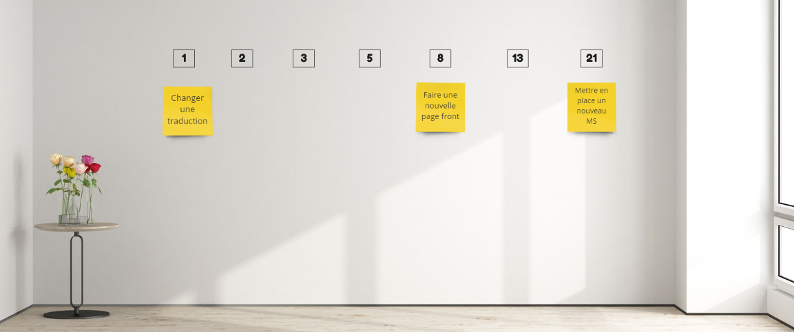

Nous avons tous déjà rencontrer des problème d'éstimation, un manque d'interet de l'équipe sur ce sujet ou encore des éstimations influencées.
J'ai rencontré ce "Problème" dans ma nouvelle équipe, qui ne trouve pas vraiment d'interet dans l'éstimation des taches et vois plus ça comme une perte de temps.
Il y'a plusieurs indicateurs qui montrent que l'équipe à une mauvaise échelle d'estimation. Cette dernière ne veut pas dire que l'équipe ne fonctionne pas, ni prévisible mais ce n'est pas un indicateur qui est utilisable et challengable dans le but d'une amélioration.
Je vous propose donc un atelier que j'ai déjà fais dans mes anciennes équipes et qui à donner un sens à l'éstimation même pour les plus réticents.
Cet atelier est simple à mettre en place et necessite peu de préparation. Il faut avoir un mur dans l'éspace d travail de l'équipe car il va servir de support quotidien par la suite. Avant de débuter l'atlier, nous devons choisir un ticket de réference pour pouvoir s'en servir d'exemple. Ca doit être un ticket avec lequel l'équipe est à l'aise, a l'habitude de le traiter et n'a aucune dépendance.
On sait que ce ticket prends entre 1 jour et 2 jours de développement en fonction de l'experience du développeur qui le fait. Ce ticket sera dont éstimé à 8 Story Point.
Un Story Point est un rapport entre la complexité et le temps, il suit la suite de Fibonachi :). Une fois que la définition d'un point est claire pour l'équipe on va pouvoir commencer l'atelier
Pour commencer, placez l'échelle sur le mur (1, 2, 3, 5, 8, 13, 21) et placer notre ticket de reference:

Avec l'équipe, on place les autres tickets en fonction du premier, en ce demandant si il est plus complexe que ? plus long que ? tout le monde peut le prendre ou il faut une expertise ?
Dans le cas ou ca serait plus de 21, il faut que cette US soit recoupé obligatoirement car il ne faut pas s'engager sur une US qui prendra tout le sprint
A la fin de l'atelier, je vous conseille de garder l'échelle sur le mur comme ça il reste une référence pour l'équipe.